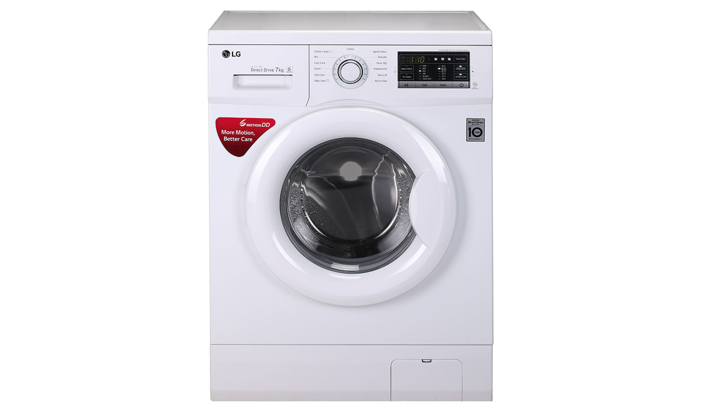

Стиральные машины LG

Краткое описание
Стиральные машины LG – инновации, надежность и простота в управлении. Большой выбор моделей под любые задачи. В
основе всех разработок компании LG лежат высокотехнологичные решения.
Подробное описание
Стиральная машина в наше время вещь абсолютно незаменимая и каким-то атрибутом роскоши давно не является. Немалая
заслуга в том и южнокорейского гиганта LG, сумевшего к началу 2000-х наполнить отечественный ритейл
качественной, надёжной, но при этом доступной по цене продукцией. Сегодня это уже признанный мировой лидер в
области производства бытовой техники и электроники. Популярность бренда поистине огромна, особенно среди
представительниц прекрасной половины человечества. Поэтому неслучайно наш сегодняшний рейтинг посвящён лучшим
стиральным машинам LG.
Технические характеристики
- Инверторный мотор с прямым приводом и гарантией 10 лет. Крепится непосредственно к барабану, надёжен
и долговечен, обеспечивает снижение шума и вибрации.
- Технология 6 движений заботы. Благодаря тому же инверторному двигателю и отсутствию ремня,
поддерживаются различные варианты вращения барабана в зависимости от выбранного режима стирки, типа ткани и
степени загрязнения.
- Мобильная диагностика. Помогает сэкономить время и деньги в случае неполадок в стиральной машине.
Определить неисправность можно посредством звонка в центр тех. поддержки либо воспользоваться специальным
приложением для смартфонов.
- Быстрая стирка TurboWash. Позволяет сократить стандартный 95-минутный цикл до 59 мин.
- Интеллектуальная система AI DD. Определяет вес и тип тканей и подбирает оптимальный алгоритм стирки,
основываясь на базе данных из 20000 вариантов.
- Функция пара. True Steam – по заверениям производителя горячий пар в процессе стирки смешивается с
водой, смягчает бельё, обеспечивает полное растворение моющего средства, нейтрализует бактерии и аллергены.
Специальный режим «Освежение паром» служит для устранения въевшихся запахов, разглаживания лёгких складок
без использования «химии» и воды. Более простой вариант Steam работает только в процессе стирки на 3 циклах:
«Гипоаллергенный», «Хлопок + Пар», «Одежда малыша».